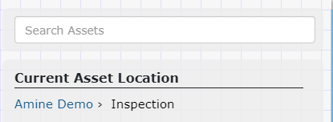
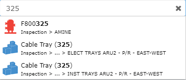
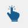

コンテンツブラウザ
Knowledge Bookコンテンツ ブラウザを使用すると、ナレッジビューのアセットコンテンツを参照できます。コンテンツ ブラウザには、ナレッジビューの一部であるアセットのみが表示されます。

コンテンツ ブラウザは、Knowledge Bookビューアの左上隅にある[コンテンツ ブラウザ] タブをクリックすると表示されます。コンテンツ ブラウザを非表示にするには、 [コンテンツ ブラウザ] タブを再度クリックします。
コンテンツ ブラウザは 3 つのメイン パネルで構成されます。
現在のアセットの場所

コンテンツ ブラウザ内の現在のアセットの場所を表します。このパネルには階層コントロールが含まれており、現在のアセットの親の 1 つをクリックしてアセットの場所を変更できます。
[アセットの検索]テキスト ボックスを使用すると、現在のアセットの場所内またはその下でアセットを名前で検索できます。検索文字列を入力します。これにより、名前に検索文字列が含まれるアセットのリストが作成されます。このリストには、階層内のアセットの場所も表示されます。リスト内の目的のアセットをクリックして、アセットコンテンツ ブラウザーで選択します。 アセットツールバーを介してビューアでアセットを見つけることができるようになりました。アセットの検索機能は現在、名前によるマークされたポイントの検索をサポートしていません。

アセットコンテンツ

現在のアセットの場所の直下にあるアセットをリストします。
アセットリストで、 |
| アセットの場所を変更し、新しいアセットの場所の下にアセットをリストします。 |

アセットを選択するには、アセット名またはアイコンをクリックします。アセットのツールバーコマンドが有効になります。アセットツールバーのコマンドは、選択したアセットに作用します。
アセットツールバーには次の機能が用意されています。
 | ビューアで選択したアセットを選択します。 |
| 選択したアセットの境界 (範囲) にズームします。 |
| アセット階層内で以前にアクセスしたアセットレベルに戻ります。 |
アセット階層内で次にアクセスするアセットレベルに進みます。このコマンドは、以前に「戻る」ボタンを使用したことがある場合にのみ使用できます。 |


マークされたポイントの内容

現在のアセットの場所の下にあるすべてのマークされたポイントをリストします。カード ビューのマークされたポイントカードには、マークされたポイントの種類、名前、およびキャプションが含まれます。
マークされたポイントを選択するには、マークされたポイントをクリックします。マークされたポイントのツールバーコマンドが有効になります。マークされたポイントツールバー コマンドは、選択したマークされたポイントに作用します。
マークされたポイントツールバーコマンド
マークされたポイントのツールバーには、次のコマンドが用意されています。
ビューアで選択したマークされたポイントを選択します。 | |
| 選択したマークされたポイントの境界 (範囲) にズームします。 |
スキャン内容

ナレッジビューのアセットの範囲内にあるすべてのスキャンをリストします。
デフォルトでは、スキャンはビューアに表示されません。スキャンの表示は、表示マネージャーで切り替えることができます。 |
スキャンを選択するには、スキャンをクリックします。スキャン ツールバーコマンドが有効になり、スキャンのクイック情報が表示されます。スキャン ツールバーのコマンドは、選択したスキャンに作用します。
スキャンツールバーのコマンド
スキャン ツールバーには次のコマンドが用意されています。
| 選択したスキャンの境界 (範囲) にズームします。 |
| カメラをスキャンの位置と方向に合わせます。 |